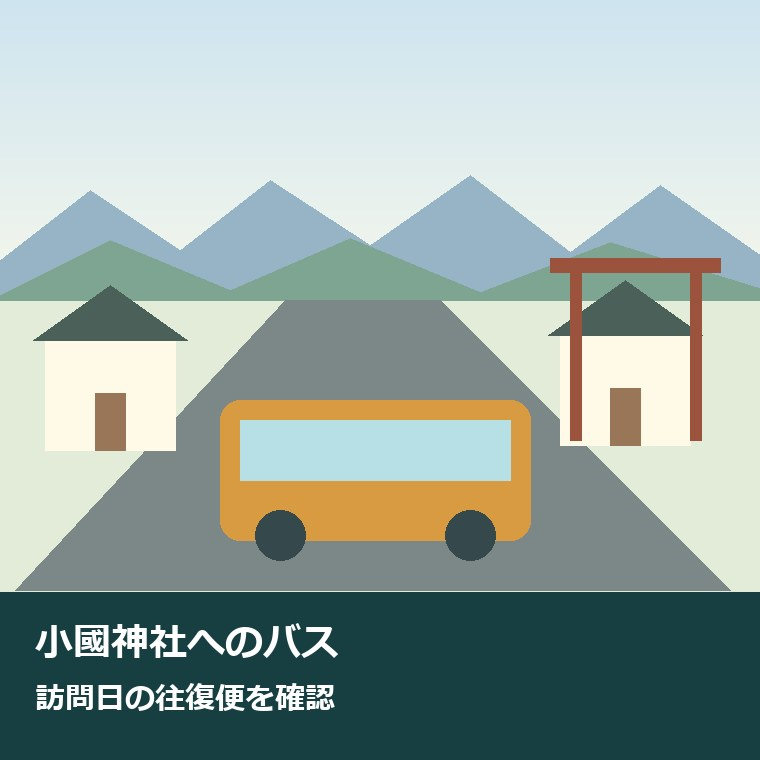
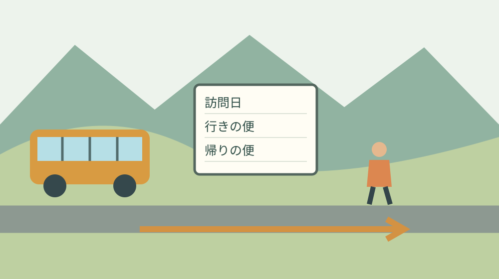

小國神社へのバス｜2026年秋の運行日確認

参拝の移動を、送迎する家族の予定から考える
小國神社へ出かける楽しみの裏には、運行を担う人や、駅まで送る家族の時間があります。帰りが決まらないまま出発すると、その日の仕事や家事を中断して迎えに行く人が必要になるかもしれません。バスを調べるときは、参拝する本人と送迎を頼まれる人の両方の予定を見たいところです。
この記事は、2026年10月に小國神社へ車以外で訪れたい人に向けた案内です。秋葉バスサービス株式会社の小國神社開運線について、運行日を選び、該当するダイヤで往復を組む手順を整理します。すべての日に同じ本数が走る路線として予定を立てないでください。
私は大石浩之（磐田市／不動産業）です。家や土地の相談を考える立場から、駅やバス停が近いことと、用事を済ませて帰れることを分けて見ています。参拝も同じで、行きの便があるだけでは一日の移動は完成しません。今日は訪問日の往復便を一組確認するところまで進めます。
鉄道とバスを乗り継ぐ場合は、駅の近さより接続の確認が先です。天浜線の駅の本数と接続の考え方も、予定を組む際の補助になります。この記事の時刻は2026年9月25日の確認内容であり、乗車する日の運行を保証するものではありません。
9月18日の公開案内と、2026年10月の運行日
秋葉バスの小國神社開運線公式ページは、2026年9月18日付で10～11月の運行ダイヤと運行カレンダーを公開したと案内しています。12月のダイヤは9月末に公開する予定と記載されています。9月25日時点の秋の確認では、10月と11月を選び、12月は別の更新を待つ形にします。
同ページには、日によって運行数が異なるとの注意があります。まずカレンダーを訪問する年と月に合わせ、日付の欄にあるダイヤ記号を確認します。A・B・C・Dの列が並ぶ時刻表だけを見て、すべての便がその日に走ると読まないことが最初の確認です。
2026年10月のカレンダーでBと表示されるのは、3日、4日、10日、11日、12日、17日、18日、24日、25日、31日の10日です。土曜日5日、日曜日4日と、スポーツの日の12日が該当します。本記事ではこの10月の表示を確認したうえで、Bダイヤの時刻を案内します。
2026年10月のそれ以外の日は、確認時点では運休表示です。意外に見えるのは10月1日で、月次祭の案内が付いていても、バスの欄は運休になっています。神社の行事があることと、バスが運行することは別です。行事名を見ただけで交通の予定を確定しないでください。
11月の訪問は、カレンダーを11月へ切り替えて確認します。10月の曜日やBダイヤのパターンを、そのまま翌月へ延ばす使い方は避けます。12月に出かける人も、9月末公開予定という告知と、実際に公開された運行日・時刻を分けて確かめる必要があります。
Bダイヤは行きと帰りを一組で読む
小國神社開運線の公式時刻表では、Bダイヤの小國神社行きは2便です。袋井駅前10時10分発が、天浜線遠州森駅前10時35分、小國神社前10時50分着。袋井駅前12時10分発は、天浜線遠州森駅前12時35分、小國神社前12時50分着と表示されています。
Bダイヤの帰りは、小國神社前13時00分発と15時30分発です。13時00分発は天浜線遠州森駅前13時15分、袋井駅前13時40分着。15時30分発は天浜線遠州森駅前15時45分、袋井駅前16時10分着です。到着地を取り違えず、自分が下車する停留所の行を読みます。
例えば2026年10月3日に遠州森駅側から利用するなら、10時35分発・小國神社前10時50分着と、小國神社前13時00分発・遠州森駅前13時15分着を一組として確認できます。これはBダイヤを読むための組合せ例です。鉄道との接続や当日の遅れまで保証する予定ではありません。
時刻表上では10時50分の到着から13時00分の出発まで2時間10分あります。ただし、全時間を参拝や食事に使える意味ではありません。停留所からの往復、乗車前の待機、歩く速さによって必要な余裕が変わります。本人の体力や同行者の予定を見て、帰りの便を選びます。
12時50分着の便で来て13時00分発に乗る組合せは、時刻表の差が10分しかありません。往復便が存在するというだけで、参拝の予定として勧めることはできません。私は、到着と出発の差を実際に引き算してから、現地で何をするかを決める順序がよいと考えます。
袋井駅・遠州森駅から、乗り場までをつなぐ
秋葉バスの公式ページは、JR袋井駅北口2番のりば、天竜浜名湖鉄道の遠州森駅、遠州森町バスターミナル、小國神社の乗り場案内を掲載しています。駅名と停留所名を確認したうえで、自分が乗る便の経路と乗車場所を照合します。似た名称だけで待つ場所を決めません。
Bダイヤの時刻表に遠州森町バスターミナルの個別時刻が載っているわけではありません。Dダイヤの列など、別の運行区分の表示を混ぜて読まないようにします。この記事の往復例は、Bダイヤで時刻を確認できる袋井駅前と天浜線遠州森駅前を使っています。
天浜線を利用する家族は、遠州森駅で下車する時刻だけでなく、改札から乗り場へ移る時間も確かめます。文化財の駅舎を見学したい場合も、乗り継ぎを先に決める方が予定を組みやすくなります。駅舎の紹介は遠州森駅と遠江一宮駅の文化財比較で確認できます。
森町の『鉄道・民間路線バス・タクシー リンク集』は、天竜浜名湖鉄道と秋葉バスの時刻表や運賃の公式確認先をまとめています。町の一覧は入口として使い、最終的な運行情報は事業者の現行案内へ進んで確認します。町の紹介ページと事業者の時刻表を同じ更新日だと思い込まない方法です。
良い点｜帰りまで決まれば、送迎の頼み方が具体になる
小國神社開運線の良い点は、日付のカレンダーとダイヤを照合すれば、参拝の往復を具体的な時刻にできることです。私は、家族に『帰りはどうするの』と聞かれてから調べる状況を減らせる点を評価します。運行を支える人の仕事が、自家用車以外の選択肢を作っています。
袋井駅前と遠州森駅前の両方に時刻が示されているため、家族ごとの出発地に合わせて検討できます。町外から鉄道で来る人と、町内で駅まで移動する人では必要な準備が違います。同じ小國神社への訪問でも、集合場所を一つに固定せずに予定を相談する材料になります。
帰りの時刻が決まると、駅までの迎えだけを頼むのか、自宅から全行程を送迎してもらうのかを分けられます。私は、家族が引き受ける区間と時間を短く説明できることに価値があると考えます。運賃だけでは見えない、待機する時間や連絡の手間も話題にできます。
この利点が成り立つのは、本人が無理なく停留所へ行けて、運行日の便に乗れる場合です。家から駅までの移動、歩行、待ち時間が難しければ、別の方法の方が負担を抑えられることもあります。バスを使うこと自体を目的にせず、一日の往復が成立するかで判断します。
注文したい点｜運行日と座席確保を一緒にしない
小國神社開運線を使う際の注意は、運行日が限られることに加え、乗車券を買うことと席を確保することが同じではない点です。秋葉バスの電子チケット案内は、座席の指定・確約はできず、満席の場合には次便を案内する場合があると明記しています。購入済みでも予定に余裕を残します。
9月24日の案内で電子チケットの販売延長が告知されていますが、この記事では割引や購入条件を一律の利用条件として勧めません。EX旅先予約はエクスプレス予約またはスマートEX会員向けのサービスと説明されています。使う人は対象条件を確認し、一般の乗車方法と混同しないでください。
往復利用を希望する場合も、電子チケットは片道ずつ予約するという案内です。行きの購入画面を見て往復の準備が済んだと思わないことが確認事項になります。ここでの『予約』という表現は座席指定の意味ではありません。購入するものと保証されないものを分けて読みます。
私は、帰りの便に乗れなかった際の対応を、現地に着いてから家族へ丸投げする計画には迷いがあります。迎えを頼める人がその時間に動けるとは限りません。今日できる備えは、代替の確認先と連絡方法を一つ決め、無理なら訪問日を変える選択も最初から残しておくことです。

対案・結論｜今日は訪問日の往復便を一組確認する
小國神社へのバス利用で今日行うことは、訪問日、行きの便、帰りの便を一組にすることです。まず年月日を書き、公式カレンダーでその日の運行表示を確認します。運休なら別の日や交通手段を検討し、時刻表だけで運行することにしません。
次に、カレンダーの記号と同じ列で乗車地の発時刻と小國神社前の着時刻を読みます。帰りも同じ運行日の対応する列で、小國神社前の発時刻と目的の駅の着時刻を記録します。行きがBで帰りは別の日のCを使うような、列と日付の取り違えを防ぎます。
一組を選んだら、駅までの移動と帰宅までを追加します。家族に迎えを頼む場合は、どの停留所か、何時頃か、遅れたときにどの連絡先を使うかを相談します。運行を支える人へ無理な停車や時間変更を求める準備ではなく、自分たちの行動を整える準備です。
当日は公式ページの運行案内を再確認します。専用車両以外で運行する場合があるという注意も掲載されているので、車体の見た目だけで別路線と判断しないようにします。不明点は、公式案内の連絡先や乗り場表示で行き先を確かめてください。
家族へ渡すメモは、迎えが必要な区間を明記する
家族へ渡す参拝の予定には、訪問日と確認日、乗る停留所、往路と復路の発着時刻、駅から家までの移動を書きます。スクリーンショットを使う場合も、何月のカレンダーかが見えるように保存します。切り抜いた時刻だけが後で独り歩きすることを防げます。
メモの中で、バスで移動する区間と家族の送迎を頼む区間は別の行にします。『バスで行く』という一言でも、自宅から駅まで送る人には仕事が残ります。誰が何時にどこへ来るかを確認できれば、頼まれた家族が自分の予定と照らして返事をしやすくなります。
森町の公共交通案内には町営バスや地域タクシーへの入口もありますが、小國神社開運線とは別の仕組みです。対象や予約条件を確認せず、観光の代替として誰でも使えると考えないようにします。生活の移動手段は免許返納後の森町の足を参考に、公式条件を照合してください。
離れて暮らす家族は、電話で『大丈夫』と聞くだけでなく、帰りの停留所名と便の時刻を一緒に読み上げる方法もあります。本人の外出を管理するためではなく、困ったときの連絡を具体的にするためです。予定の共有範囲は本人と相談し、不在予定を公開する必要はありません。
大石の視点｜帰りの穴を、家族の善意で埋めない
私はこう考えます。帰りは家族が迎えればよい、を予定の穴埋めにしない。迎える人にも仕事と暮らしがあります。公共交通を調べることは運賃を節約する話だけではなく、家族に何を頼むかを明確にする話です。出発前に一組の往復便を決めるだけでも、その頼み方は変わります。
森町の社寺へ車以外で来られる選択肢は、町の可能性につながると私は考えます。一方で、交通の担い手がいて初めて成立する移動です。便利さを紹介するときも、毎日同じ条件で利用できるかのようには書きません。運行日と条件を確かめて使うことが、支える人への現実的な配慮になります。
私には、すべての家族にこのバスが最適かは分かりません。長く歩くのが難しい人、帰宅時刻に制約がある人では、別の選択が合う場合もあります。バスを選ばなければ失敗なのではなく、往復を比較して無理が分かったなら、それも予定を決めるための前進です。
家の立地を評価する際も、私は『駅がある』『バスが通る』の次を見たいと考えています。使う日、乗る時刻、戻る方法、動けないときの代替がそろうか。参拝の予定を一度具体化することは、森町で暮らす際の移動を考える練習にもなります。これは現地体験の報告ではなく、私の判断です。
まとめ｜秋の予定は日付、ダイヤ、帰りの順に
小國神社開運線の2026年10～11月の案内は9月18日に公開されています。10月は運行カレンダーのB表示の日を選び、Bダイヤの往復時刻を照合します。神社の行事日と運行日、電子チケットの購入と座席確保を、それぞれ別の条件として確認してください。
今日の一歩は、訪問日の往復便を一組記すことです。家から乗り場、帰りの駅から自宅までを足し、送迎が必要な区間を家族と相談する。参拝を楽しむ予定と、運行や送迎を支える人の負担を同じ紙に載せることで、無理のない外出の準備ができます。
よくある質問
小國神社開運線の運行日、遠州森駅からの利用、電子チケットの条件を整理します。いずれも乗車前に公式の現行案内を確認してください。
2026年10月は毎日バスが走りますか？
毎日ではありません。2026年9月25日に確認した公式カレンダーでは、10月3・4・10・11・12・17・18・24・25・31日がBダイヤで、それ以外は運休表示です。10月1日は月次祭の案内が付いていても運休です。神社の行事日から運行を推測せず、訪問日を選んで公式カレンダーを再確認してください。
遠州森駅から往復するBダイヤの例は？
Bダイヤでは天浜線遠州森駅前10時35分発、小國神社前10時50分着と、帰りの小國神社前13時00分発、遠州森駅前13時15分着を組み合わせられます。ほかの便も公式時刻表で確認できます。鉄道との接続、参拝と徒歩の時間、遅延は別に検討し、乗車日がBダイヤであることを先に確かめてください。
電子チケットを買えば席は確保されますか？
秋葉バスの電子チケット案内では、座席の指定・確約はできず、満席時には次便を案内する場合があるとされています。往復利用でも片道ずつ予約する扱いです。EX旅先予約はエクスプレス予約またはスマートEX会員向けのため、購入条件も確認してください。チケット購入と座席確保は分けて予定を立てます。

公式情報源
2026年9月25日確認。制度・数値・運行案内は変更される場合があります。利用前に公式情報を再確認し、個別の法令・土地・権利の判断は担当窓口や専門家へ相談してください。
- 秋葉バス：小國神社開運線（9月18日の秋ダイヤ公開案内・時刻表・乗り場）（2026年9月25日確認）
- 秋葉バス：2026年10月の運行カレンダー（2026年9月25日確認）
- 森町：森町の公共交通について（2026年9月25日確認）
- 森町：鉄道・民間路線バス・タクシー リンク集（2026年9月25日確認）